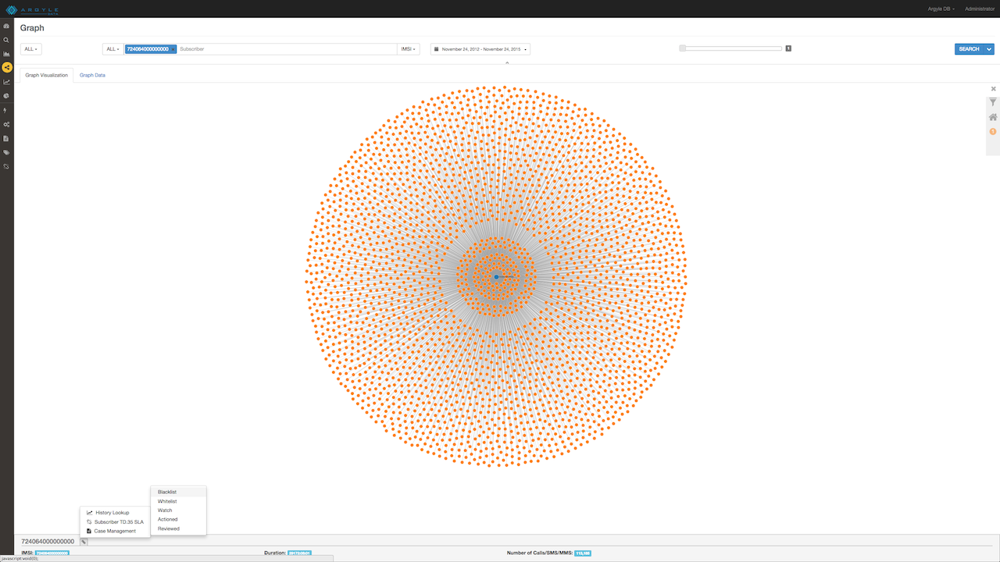

How to Detect Fraud and Blacklist Numbers

The initial alert of potential fraud will show up as an email. The email will list all of the calls that machine learning has interpreted as fraudulent.
Now, log onto Argyle Data.
Once you have logged in, click on the Fraud Alert Management button, highlighted in yellow, in the toolbar on the left side of the screen. This view lists fraud suspects, the protocol and the method of fraud that is suspected, as well as the end time of the suspected fraudulent period.
From there, click on “Fraud Analytics” in the toolbar. The initial screen gives a top down view of potential fraud from a domestic standpoint (ISUP) and a roaming standpoint (TD35). This dashboard comes with a predetermined set of charts and graphs, but it can be configured to provide different graphs that fit your company’s specific needs.
Domestic Fraud
Click on “graph” in the toolbar to view fraud from graphical viewpoint. To get a graph like the one in Fig. 7, select ISUP from the dropdown menu on the left of the screen. Enter a number that looked suspicious from Fig. 5 into the bar at the top of the screen and click search. The graph that comes up makes it very clear to see fraud. The above case is an instance of Wangiri fraud. The caller in the middle (the number entered into the search bar) has called all of the numbers in the two surrounding rings. The nodes on the inner circle are the callers unfortunate enough to have called the number back.

Click the tab that says Graph Data to get to this screen. This shows who called whom and the country each party is in. It also displays the number of calls between the two parties and the duration they were connected for.
International Fraud

Roaming fraud can be detected in a similar way to domestic fraud. Select TD.35 from the dropdown menu in the top left corner of the screen and enter a suspicious number into the bar. Entering the beginning of a number with a * at the end shows results for every number that begins with those digits. Once a number has been entered, click search.

This graph shows results for three nodes. In order to highlight the data from the node that looks like a Wangiri attack, click on the node. A bar will come up at the bottom of the screen. Click on the spanner to bring up a popup menu.
The popup menu offers three options: History Lookup, Subscriber TD.36 SLA and Case Management. Click on History Lookup.

History Lookup brings up this screen. Notice we on have moved from “Graph” to “History Lookup” in the toolbar. The graph shows the time period over which these calls took place, with the different colors representing data, SMS and voice respectively.

Click and drag the mouse over the area on the graph where the spike in activity takes place. This will pull up the usage over this time period.
To expand the view of the area with activity, drag the sliders at the bottom of the graph to decrease the timeframe of the graph. Notice that Gayana frequently appears in the Roaming column as we will use this information later on.
Blacklisting a Number

Go back into “Graph” on the toolbar. Only one blue node will now appear. Click on it (this may be tricky as the graph moves around). Notice that outgoing calls are connected by blue lines and incoming calls are connected by red lines.

Click on the spanner at the bottom of the screen to get the pop up menu.
Hover over “Case Management” to reveal another popup menu.

This popup menu brings up multiple options: Blacklist, Whitelist, Watched, Actioned, Reviewed. Click Blacklist.

Click “Case Management” on the toolbar and then click the green “+” button to add the number to the blacklist.
Once added to the blacklist, it is possible to add comments to numbers. As this number was roaming in Guyana, we will add a comment saying “Roaming in Guyana”.

Click “Compliance Matrix” on the toolbar. This screen shows if companies are within or outside SLA.

By clicking on a carrier from the list on the top right, that carriers stats are highlights in the two tables below.